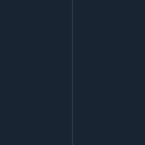
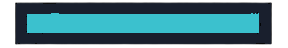
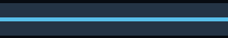
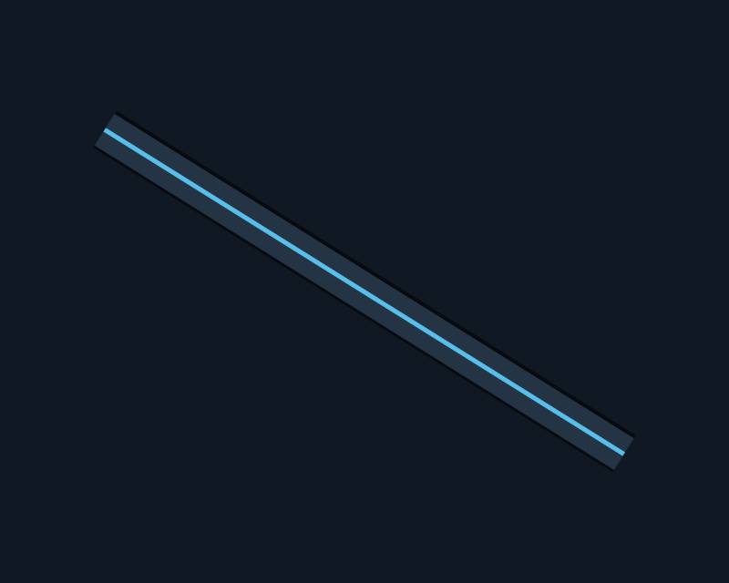
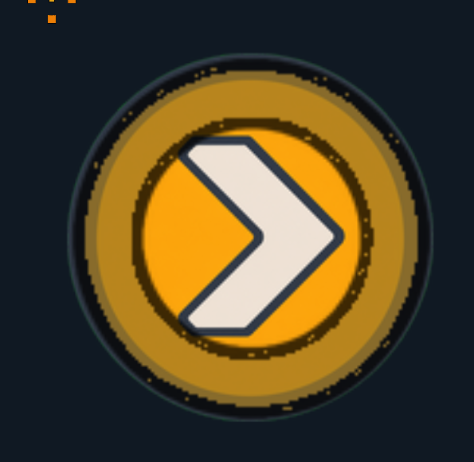

AS-IS — rejected
투명 margin, 검은 speckle/fringe, fragment마다 반복되는 외곽 contour.

- 경계 누끼 오염
- stretch 시 gutter가 과장됨
타일·벽·서비스 레일의 현재 문제와 새 edge-safe PNG 후보를 직접 비교하는 임시 검토 페이지입니다.
CANDIDATES GENERATED · NOT APPLIED투명 margin, 검은 speckle/fringe, fragment마다 반복되는 외곽 contour.
288×288, 완전 불투명, 2색, 네 방향 edge delta 0. 외곽 장식 없이 한 개의 낮은 대비 seam만 유지.

흰색 UI button처럼 보이며, 투명 cap과 내부 frame이 stretch될 때 벽 join을 끊습니다.

192×96, 완전 불투명, 4색의 pale-metal mass. 좌우 full-bleed edge delta 0.


투명 여백과 edge residue가 확대·회전되면서 부유하는 선처럼 보입니다.

288×48, 완전 불투명, 정확히 3색, 좌우 edge delta 0. end cap이나 장식이 없습니다.


이 화면은 벽이 아니라 공격력 증폭 장판입니다. facility PNG 위에 disk, ring, timer segment 8개가 중첩되어 동심원처럼 보입니다.

disk_mask + ring + 8 timer segments 중첩 제거Binding specification: VISUAL_SYSTEM.md
Style reference: cardborne-universal-art-style-reference.png, SHA-256 96ccf5d053e66dd3a102ccdf39daefd0b0c54b0e88d20428b7ba1c894f002889.
Canonical sheet was supplied as the actual image reference for all three candidate-generation tasks. These candidates are comparison evidence only and have not replaced production.
{kind=link}